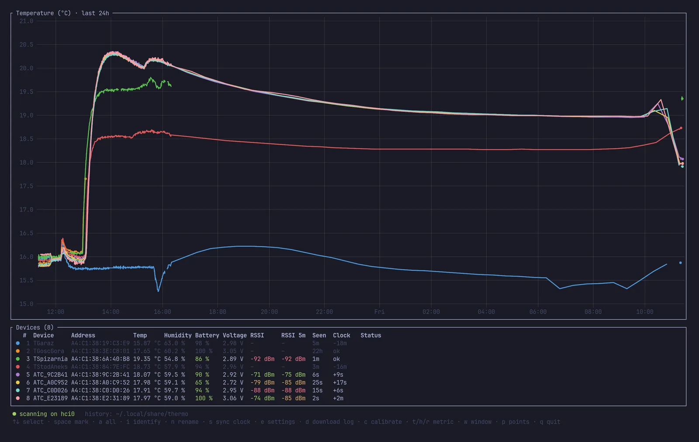
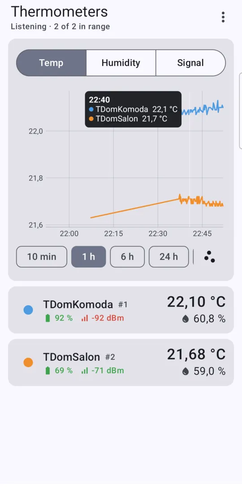
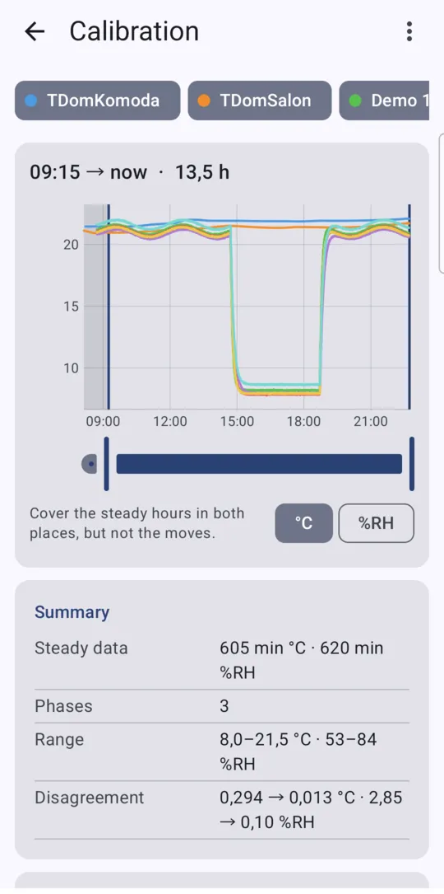
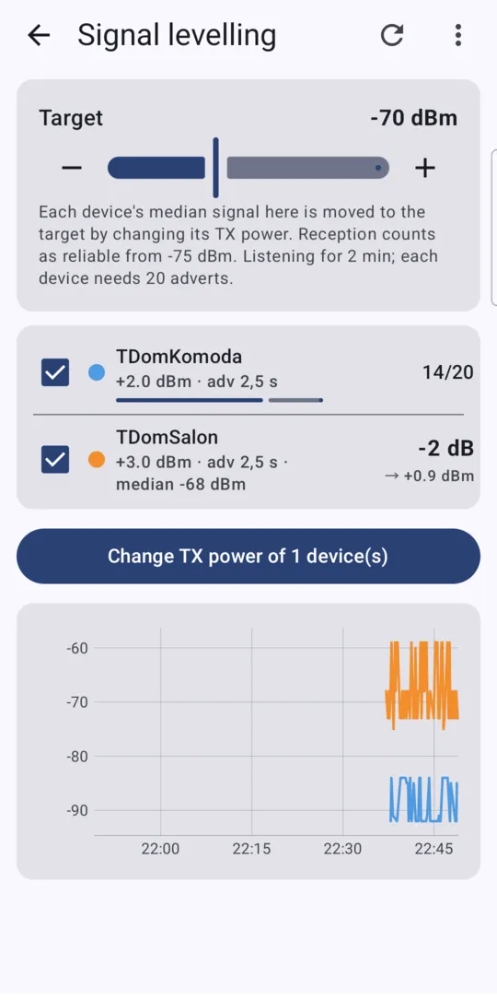

Open source · Linux · Android
Make every Xiaomi thermometer in the house agree.
thermo is a terminal dashboard for LYWSD03MMC and other thermometers running the pvvx ATC_MiThermometer firmware. It charts their live BTHome v2 readings and fills gaps from each device's own log. Put them side by side, press c, and it calibrates them all at once, writing the corrections into the thermometers. Home Assistant sees the fixed values too. The Android app does the same from your phone.
What it looks like
Real screenshots from eight LYWSD03MMC thermometers. They sat side by side indoors overnight, went to a cooler room in the morning, and were calibrated. Afterwards some of them moved to other rooms. In Ghostty or kitty the chart is a crisp image; other terminals and SSH get braille.

Disagreement in temperature (rms against the group) over the fitted window, before and after calibrating 8 devices.
The same for humidity. Out of the box, readings spread over 4–5 %RH.
Clock drift measured on the thermometers. s syncs them and trims each clock's rate.
Everything for a houseful of cheap BLE thermometers
Every action works on one device or on all marked devices at once, so eight thermometers are as easy as one.
Live dashboard
One line per thermometer, a chart above a table: temperature, humidity, battery, voltage and signal strength, updated as BTHome v2 adverts arrive. History is saved as plain CSV.
Consensus calibration
No reference instrument needed. A robust fit pulls every device onto the group average, rejects outliers, and writes a gain and offset to each thermometer's flash.
Log download, honest timestamps
Missed the last 24 hours? thermo downloads each device's own log and corrects for its wrong clock. Device clocks are usually off, and nothing assumes they aren't.
Clock sync and drift trim
Sets every clock to the computer's time. After a day it measures how fast each one runs and trims the oscillator, which here ran about 20 s per day fast.
Rename and settings, in bulk
Rename devices (stored in flash, broadcast to Home Assistant), and change advertising interval, measurement interval, TX power and log interval on all of them in one go.
Which one is which?
i shows the device's row number on its own LCD for thirty minutes, 333 with a smiley for #3, so you can label them.
Signal levelling
l listens for a few minutes, then sets each thermometer's TX power so its signal arrives at about −70 dBm: reliable, without a louder radio than it needs. Near ones get quieter, far ones louder, after you confirm.
Keeps listening
Bluetooth switched off and on, or bluetoothd restarted: scanning and device commands pick up again by themselves, and the status line says so while they wait.
Calibrating takes an afternoon and one keypress
- Side by side, two hours.
Put all thermometers a few centimetres apart, away from sun, radiators and laptop exhaust. That is enough for offsets.
- Somewhere 5 °C different, three hours.
Move them all at once: outside in the shade, a cold room, a garage. The second temperature makes the gain measurable.
- Press c.
Pick the window on the chart with Tab and ← →, check the bars, press Enter. Each device gets its own correction in flash. x brings back the factory values.
Read the full calibration guide → It covers what range to calibrate in, humidity, salt tests, and how the fit works.
Install
You need Linux with BlueZ (any desktop distro, or a Raspberry Pi), Rust 1.85 or newer, and the D-Bus development headers.
# Debian / Ubuntu / Raspberry Pi OS
sudo apt install libdbus-1-dev pkg-config
# Fedora
sudo dnf install dbus-devel pkgconf-pkg-config
# Arch
sudo pacman -S --needed dbus pkgconf
cargo install --git https://github.com/arturzielazny/atc-thermo thermo
thermoReadings are saved to ~/.local/share/thermo/ as CSV, one file per day, and reloaded on start. thermo calibrate 6 prints a calibration proposal for the last six hours without touching any device.
First, flash the thermometers
thermo talks to the open pvvx ATC_MiThermometer firmware. Stock Xiaomi firmware encrypts its adverts and has no calibration interface. Flashing is wireless, from a browser, with the TelinkMiFlasher page:
- Chrome on Linux keeps Web Bluetooth behind a flag. Enable
chrome://flags/#enable-experimental-web-platform-featuresand restart, or use Chrome on Android. - Connect, activate, and flash the pvvx firmware for your model (version 5.9 or newer was used here).
- Set the advertising type to BTHome v2. Each thermometer then shows up in thermo, Home Assistant and ESPHome.
Keys
| ↑ ↓ | select a device · Esc clears marks, then the selection |
| space a | mark one / all devices: actions apply to marked devices, or the selected one |
| c | calibration screen |
| l | signal levelling: the lowest TX power that still gives each device a reliable signal |
| s | sync clocks and trim their drift |
| d | download the device log for the last 24 h |
| n e | rename · settings (advertising, measurement and log interval, TX power) |
| i | identify: show the device's number on its screen |
| t h r w p | temperature / humidity / signal chart · time span · lines or points |
| q | quit |
On your phone too
The Android app does what the terminal does, laid out for touch. A card per thermometer, a chart you can scrub with a finger, long-press to select several devices for clock sync, log download or settings. Calibration and signal levelling get sliders instead of keys, and every write to a thermometer asks first.



Keeps recording
With the app closed it records in the background behind a notification with a Stop button, and fills gaps from the device logs when it hears a thermometer again. A home-screen widget shows the latest readings.
Same files, same maths
History is the same daily CSV as on the desktop, so it can be shared to a computer or imported from one. The calibration is a port of the Rust code and gives the same result on the same data.
Build it yourself
No store listing yet. Needs Android 8 or newer, JDK 21 and the Android SDK; open android/ in Android Studio, or run ./gradlew installDebug there with the phone on USB. Reading has been tested on a Galaxy S21; writing from the phone is newer than on the desktop.
Not quite what you need? Have an agent rewrite it.
thermo is written to be changed by AI coding agents such as Claude Code, Codex or Cursor. The repository has an AGENTS.md that explains the architecture and what is platform-specific. The BTHome decoder and the calibration maths are dependency-free and fully unit-tested, so an agent can check its own work without hardware.
Port it to macOS or Windows, turn it into a headless MQTT exporter on a Raspberry Pi, or add your own sensor model. The Android app started this way: Claude Code ported the logic to Kotlin overnight, testing on a real phone over adb.
Questions
Can I calibrate LYWSD03MMC thermometers without a reference thermometer?
Yes, relative to each other: thermo makes all devices agree with their group average, which is usually closer to the truth than any single sensor. Agreement isn't absolute accuracy, though. For absolute humidity, a sealed box over saturated table salt holds 75 %RH and makes a cheap reference. The guide explains the details.
Will Home Assistant see the calibrated values?
Yes. The gain and offset are written into each thermometer, so every receiver of its BTHome adverts gets corrected values: Home Assistant's BTHome integration, ESPHome Bluetooth proxies and anything else that decodes BTHome. thermo only listens, so it runs fine next to them. Names set with n appear in Home Assistant when it scans actively.
Which thermometers work?
Tested with eight Xiaomi LYWSD03MMC (Mi Temperature and Humidity Monitor 2) on pvvx firmware 5.9, including both sensor variants (SHT4x-type and SHT3x-type coefficients). Other models running the pvvx firmware with BTHome v2, such as MHO-C401 or CGG1, should show up and be calibratable but are untested. Reports are welcome.
macOS, Windows, Raspberry Pi, phones?
Any Linux with BlueZ works, a Raspberry Pi included. Android has its own app. macOS and Windows need the Bluetooth layer replaced. See porting with an AI agent.
Can I undo a calibration?
Yes. x on the calibration screen restores the factory coefficients, and every change is logged with old and new values in calibrations.csv. Corrections compose, so you can calibrate again later on top of the last one.
Does it drain the batteries?
Listening is passive and costs the thermometers nothing. thermo only connects to a device when you ask for something: log download, clock sync, settings, rename, identify, calibration or signal levelling, whose screen reads each device's settings when it opens. Levelling can save battery: it turns down the radio of thermometers close to the computer.